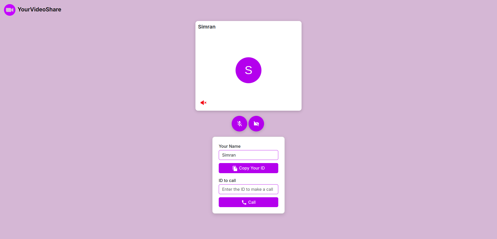
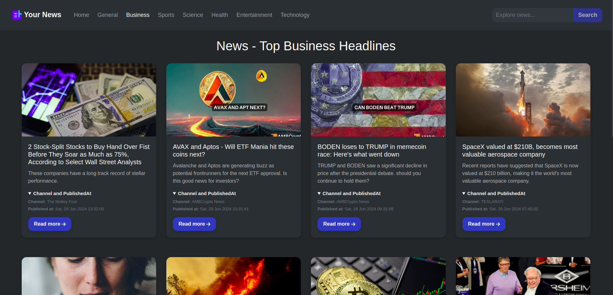
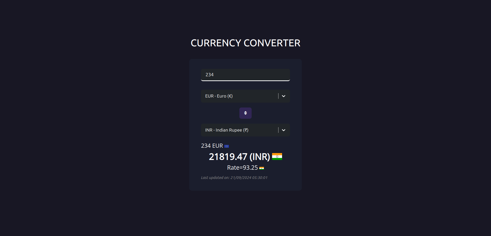

Software Engineer
Languages: JavaScript, TypeScript, Python.
Frameworks/Libraries: Next.js, React.js, Node.js,
Express.js, Redux, Material-UI.
Web Development: HTML, CSS, RESTful APIs, GraphQL,
WebSockets, Git.
Technical Skills: Front-end Development, Web
Optimization Techniques, Data Structures, Debugging.
Education
-
| MCA |
Guru Nanak Dev Engineering College (Sep 2022 - Jun 2024)
|
-
| BCA |
Guru Nanak Inst. of Mgmt. & Tech. (Aug 2019 - May 2022)
|
Work Experience
Associate ReactJs Developer at Ryazio Technologies LLP (Nov 2023 - Present)
Technologies used: Next.js, React.js, Redux.js,
ContextAPI, JavaScript, TypeScript, Storybook
-
Developed an e-commerce app with product filters, real-time cart
updates, and state management using Redux Toolkit.
-
Created an event ticketing system with calendar integration and QR
codes using QRCode.react and FullCalendar.
-
Implemented location-based search, property filters, and virtual
tours for a real estate platform using Google Maps API and
Swiper.js.
-
Built a teaching platform with class scheduling, input validation
using React Hook Form, and Axios for API interactions.
-
Developed a scheduling app with Clerk API for authentication and
real-time chat using GetStream API.
-
Created, documented, and tested reusable UI components with
Storybook, ensuring design consistency and quality.
-
Integrated and optimized backend APIs for improved performance and
data security.
-
Enhanced user experience with advanced data validation and session
management features.
-
Optimized web application performance using modern JavaScript
frameworks and tools.
-
Implemented unit, integration, and end-to-end testing to ensure code
quality and stability.
-
Designed and developed responsive websites using HTML5, CSS3,
Bootstrap, Tailwind CSS, and JavaScript.
Frontend Developer at Dez Web Solutions Pvt Ltd (Aug 2022 - Dec 2022)
Technologies used: React.js, Redux.js, JavaScript,
TypeScript
-
Integrated real-time chatbox functionality in the Playerange App
using PubNub API, enabling low-latency communication.
-
Enhanced the Cancan App with an interactive e-commerce interface
using React.js, focusing on usability and user experience.
-
Collaborated with cross-functional teams to implement scalable
solutions, ensuring optimal performance across diverse platforms.
-
Optimized front-end components by leveraging modern JavaScript
libraries and frameworks, resulting in improved application
efficiency and user satisfaction.
-
Led code reviews and debugging sessions for frontend-backend
integrations, ensuring high code quality and maintainability.
Projects
VideoShare |
React, JavaScript, ContextAPI, WebRTC, Socket.io, Express
Github
|
Live
-
The application facilitates the generation and distribution of
unique video call links, offering seamless connections and intuitive
control over audio and video settings.
-
It includes advanced functionalities such as screen sharing and
real-time messaging, enhancing the communication experience for both
personal and professional applications.

NewsDaily |
React, Redux, JavaScript, react-router, styled-components,
react-bootstrap
Github
|
Live
-
Integrated the GNews public API to fetch and display the latest
global articles and categories, including images, titles,
descriptions, and links to original sources.
-
Implemented advanced features like search functionality and article
previews, ensuring the application is fully responsive and provides
an optimal user experience.

CurrencyConverter |
React, TypeScript, Bootstrap, currency-flags, Axios
Github
|
Live
-
Developed the application using React and TypeScript, featuring a
highly interactive and intuitive UI for smooth currency selection
and amount input. Ensured full responsiveness and user-friendliness
for an optimal experience across various devices.
-
Integrated a real-time exchange rate API, enabling the app to
dynamically fetch and display current currency conversion data.

Achievements
-
Member of GreatDevelopers: Great Developers is a
Google group initiated by Dr. Hardeep Singh Rai from our college,
where we tackle real-world problems in the tech industry. We
collaborate as a team to solve various challenges, support fellow
developers, and welcome newcomers to the community.
-
Hacktoberfest: Participated in Hacktoberfest from
2021 to 2023, contributing to open-source projects by submitting
pull requests, enhancing software tools, fixing bugs, and adding new
features, thereby gaining experience in collaborative development
and version control.
-
Wartech competition: Developed a mobile shopping
application, earning first place in web development at the
competition hosted by GNIMT College.
-
Disha competition: Developed a portfolio
application and secured third place in a competition at Arya
College, competing against participants from across Punjab.
-
Head of the college's web development and IT club:
Led the college's web development and IT club, where I instructed
students in HTML5, CSS3, Bootstrap, JavaScript, and Git.